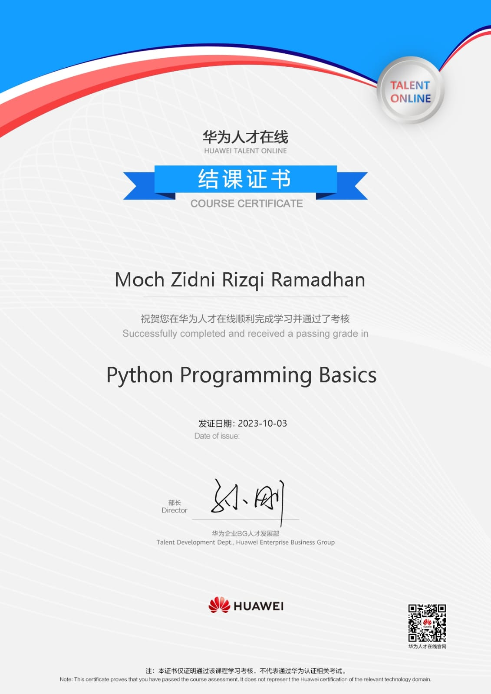
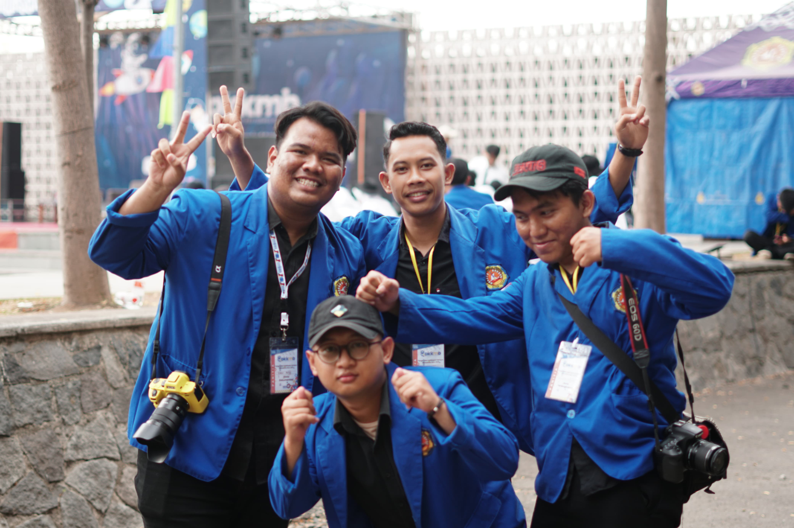

Data Diri
Hi, im Zidni Rizqi
Fotografer
Tentang Diri Saya
Hi Saya Zidni Rizqi, saya lahir di Tegal 8 November 2004. Saya Mahasiswa Teknik Informatika Politeknik Harapan Bersama Tegal, Saat ini saya semester 3. Saya Menyukai dunia fotografi untuk mengembangkan dunia fotografi saya akhirnya saya mengikuti UKM Rana 9 untuk memperluas tentang dunia fotografi.
Kemampuan/Skill
- Pengetahuan Teknis Fotografi
- Pemahaman Gaya Fotografi
- Pemahaman Tentang Segitiga Exposure
- Keterampilan Komunikasi
- Kreativitas
Hobby
- Fotografi
- Bermain game
- Berwisata
Tujuan/Goal
Terus meningkatkan keterampilan teknis dalam penggunaan kamera, pencahayaan, komposisi, dan pengeditan foto.
Sertifikat Huawei
- 
Resume Kegiatan Organisasi
-
Panitia PKKMB Poltek Harber 2023 - Divisi Dokumentasi
 -
Panitia Rana Fest 2023- Divisi Perlengkapan

-
Panitia Harber Competition 2023 - Divisi Dokumentasi

Contoh Pekerjaan
contoh
UI/UX Pixel CutSaya membuat UI/UX Pixel Cut aplikasi editing Foto, sebagai tugas project UAS semester 2.